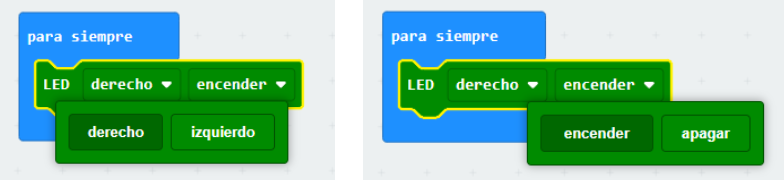
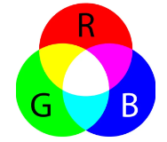
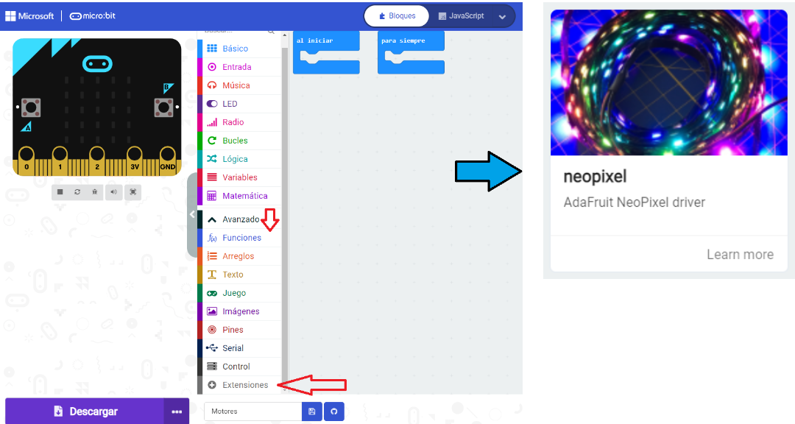
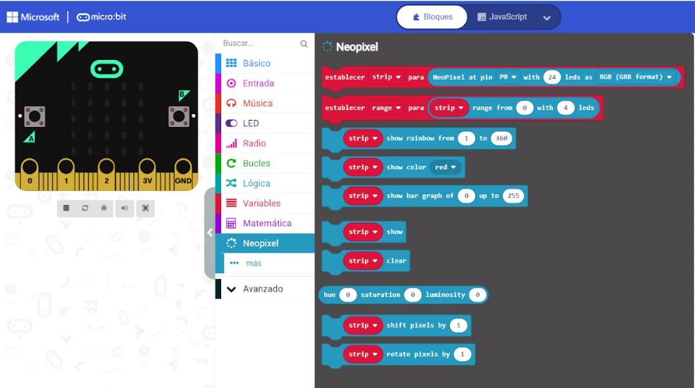
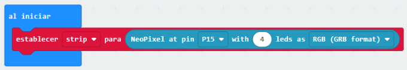
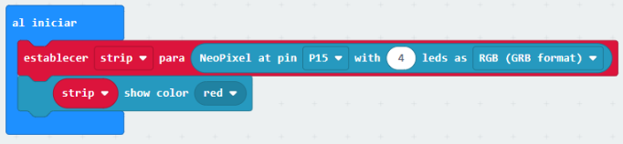
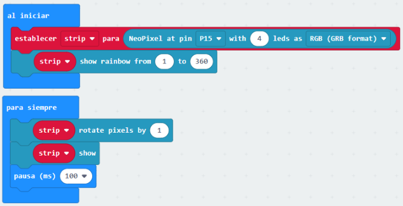
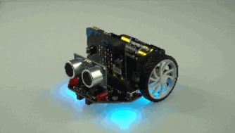

Para controlar los dos LEDs rojos que tiene el robot Maqueen en la parte delantera, utilizamos el bloque LED, en el que tenemos la opción de elegir el LED derecho o izquierdo, y la opción de apagarlo o encenderlo.

Realiza un programa con el que se enciendan los LEDs izquierdo y derecho alternativamente cada medio segundo, para siempre.
2.1.- Encendiendo los LEDs RGB

Maqueen tiene 4 LEDs RGB muy brillantes que pueden mostrar ¡hasta 16 millones de colores diferentes! Los puedes encontrar en la parte de abajo, como pequeños rectángulos blancos conectados a la patilla P15.Dentro de cada LED hay 3 LEDs más pequeños; Rojo, Verde y Azul y dependiendo de la intensidad luminosa de cada uno será el color final que podrás apreciar.
Cada LED RGB tiene 255 niveles de luminosidad.
Para programar los LEDs RGB con Makecode, tenemos que cagar previamente la extensión neopixel en el menú Avanzado -> + Extensiones.

A partir de entonces, disponemos de una nueva categoría llamada Neopixel, con varios bloques que nos permiten controlar los LEDs RGB.

Esta categoría se utiliza para encender tiras de LEDs RGB de distinta longitud, así que lo primero que tenemos que hace es configurarla para nuestro Maqueen, que tiene 4 LEDs conectados al puerto P15, mediante el siguiente bloque dentro del bloque "al iniciar".

Con el siguiente bloque podemos encender todos los LEDs RGB de un color determinado a elegir entre 16 opciones. Prueba todos los colores, ¿Cuál es tu favorito?

Y con el siguiente programa podemos hacer unas "luces de discoteca".


Actividad 2: Luces
Conecta al ordenador la placa de micro:bit y realiza los siguientes ejercicios:
- Crea un programa en el que el robot Maqueen se mueva hacia adelante durante 2 segundos, gire a la derecha y encienda el LED derecho mientras avanza durante 1 segundo, luego gire a la izquierda encendiendo el LED izquierdo (y apagando el derecho), durante otro segundo.
- Crea un programa para simular el funcionamiento de un semáforo con los LEDs RGB de Maqueen.
- Crea un programa que al pulsar el botón A se enciendan los LEDs RGB de color azul, al pulsar el botón B, se enciendan en amarillo y al presionar ambos, se encientan en verde.
- Haz que Maqueen baile mientras muestra las luces de discoteca al mismo tiempo que muestra un corazón latiendo en su pantalla (quita el sensor de ultrasonidos para ver mejor la pantalla).